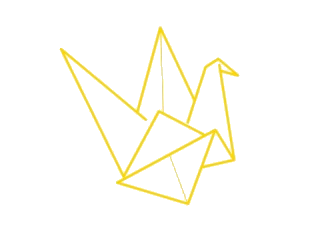

Faz Parte da Mudança
Torna-te voluntário e junta-te a centenas de jovens que dedicam o seu tempo a transformar vidas.
Porque Juntar-se
O Que Oferecemos
Formação
Descobre workshops e formações gratuitas que te ajudam a crescer pessoal e profissionalmente.
Certificação
Recebe reconhecimento oficial pelas horas de voluntariado que realizas.
Comunidade
Faz parte de uma rede de jovens motivados, com quem partilhas valores e experiências únicas.

Impacto
Contribui para causas reais e acompanha os resultados das tuas ações na sociedade.
Banco de Voluntariado
O Teu Primeiro Passo Para Seres VO.U.
O Banco de Voluntariado é a nossa base de dados central e o ponto de partida para todos os que querem colaborar connosco. A inscrição no Banco é obrigatória para quem pretende fazer parte da VO.U., garantindo que ficas ligado à nossa rede e acompanhas todas as oportunidades em primeira mão.
Abertura de Vagas
Serás o primeiro a saber quando abrem as candidaturas para os nossos projetos e núcleos.
Atividades Pontuais
Receberás convites para eventos especiais da VO.U., como o VO.U. Mais Longe ou a Corrida Solidária.
Parcerias de Mobilização
Partilhamos oportunidades de voluntariado fora da VO.U., através das nossas parcerias com diversas instituições.
Inscreve-te Agora
Junta-te a nós e faz parte da mudança. O processo é simples e rápido!